감정평가사-1차-1교시(구) (2009-07-05 기출문제)
1과목: 민법(총칙,물권)
1. 민법의 법원(法源)에 관한 설명으로 옳지 않은 것은?
- 민법 제1조의 법률은 형식적 의미의 법률만을 의미하는 것은 아니다.
- 삼권분립을 강조하면 판례의 법원성을 인정하기 어렵다.
- 헌법상 대통령의 긴급재정경제명령은 법원이 될 수 없다.
- 지방자치단체의 조례와 규칙도 법원이 될 수 있다.
- 판례는 관습법의 보충적 효력을 인정하고 있다.
(정답률: 알수없음)

2. 물권적 청구권에 관한 설명으로 옳지 않은 것은?
- 상대방의 고의ㆍ과실이 없더라도 물권적 청구권을 행사할 수 있다.
- 물권적 청구권은 물권과 분리하여 이를 양도할 수 없다.
- 물권적 청구권과 불법행위로 인한 손해배상청구권은 병존할 수 있다.
- 물권적 청구권이 물권과 별도로 소멸시효에 걸리는지에 관하여는 학설이 대립한다.
- 민법은 소유권에 기한 물권적 청구권을 질권에 준용하는 규정을 두고 있다.
(정답률: 알수없음)
3. 신의성실의 원칙에 관한 설명으로 옳지 않은 것은? (다툼이 있으면 판례에 의함)
- 신의성실의 원칙은 채권관계뿐만 아니라 물권관계나 가족관계에서도 적용된다.
- 신의성실의 원칙은 구체적 내용이 정하여져 있지 않은 일반조항으로서 그 내용은 재판에 의하여 형성된다.
- 신의성실의 원칙은 강행법규의 성질을 가지므로 당사자의 주장이 없더라도 법원이 직권으로 판단할 수 있다.
- 강행법규 위반사실을 알면서 그러한 계약을 체결한 당사자가 후에 그 행위가 강행법규 위반으로 무효라고 주장하는 것은 신의칙에 위반된다.
- 신의성실의 원칙에 위배됨을 이유로 권리행사를 부정하기 위해서는 법률관계의 당사자가 상대방의 신의에 반하여 권리를 행사하는 것이 정의관념에 비추어 용인될 수 없는 정도의 상태에 이르러야 한다.
(정답률: 알수없음)
4. 일물일권주의에 관한 설명으로 옳지 않은 것은?
- 일물일권주의란 물건의 일부 또는 다수의 물건 위에 하나의 물권이 성립할 수 없다는 원칙이다.
- 물건의 일부나 집단 위에 하나의 물권을 인정하여야 할 거래계의 필요가 있고 적절한 공시방법이 마련된 경우에는 물건의 일부나 물건의 집단에 하나의 물권의 성립을 인정하기도 한다.
- 명인방법을 갖춘 수목의 집단은 독립한 부동산으로서 저당권의 목적물이 될 수 있다.
- 지상권과 지역권은 토지의 일부에도 설정할 수 있다.
- 건물의 일부에도 전세권을 설정할 수 있다.
(정답률: 알수없음)
5. 태아의 권리능력에 관한 설명으로 옳은 것은? (다툼이 있으면 판례에 의함)
- 태아는 증여의 상대방이 될 수 있다.
- 정지조건설에 따르면, 태아의 법정대리인이 필요하다.
- 민법규정에 따르면 태아는 부(父)에 대해 인지를 청구할 수 있다.
- 모체에 대한 가해행위로 모(母)와 함께 태아가 사망한 경우, 해제조건설에 따르면 태아 자신은 손해배상청구권을 가지지 못한다.
- 태아의 부(父)가 타인의 불법행위로 사망한 경우, 부(父)의 생명침해로 인한 재산적 손해에 대해서는 태아에게 직접 손해배상청구권이 발생한다.
(정답률: 알수없음)
6. 공동저당에 관한 설명으로 옳지 않은 것은? (다툼이 있으면 판례에 의함)
- 대지와 건물이 동시에 경매되어 공동저당권자에게 그 경매대가를 동시에 배당하는 때에는, 대지와 건물의 경매대가에 비례하여 그 채권의 분담을 정하여야 한다.
- ①에서 부담안분의 원칙은 저당부동산에 대하여 후순위저당권자가 존재하는가의 여부를 불문하고 적용된다.
- 채무자의 부동산보다 물상보증인의 부동산에 대하여 먼저 담보권이 실행되었다면, 물상보증인의 부동산에 후순위저당권을 가진 자보다 물상보증인이 우선적으로 보호된다.
- 공동저당권자는 임의로 어느 저당목적물로부터 채권의 전부나 일부의 우선변제를 받을 수 있다.
- 공동저당부동산이 5개 이상일 때에는 공동담보목록을 첨부하여야 한다.
(정답률: 알수없음)
7. 법원은 부재자 甲의 재산관리인으로 乙을 선임하였다. 그 후 乙은 법원의 허가를 얻어 甲의 토지를 丙에게 매도ㆍ등기하였다. 다음 중 옳지 않은 것은? (다툼이 있으면 판례에 의함)
- 乙은 원칙적으로 甲의 재산의 관리행위를 할 권한을 가진다.
- 乙이 보존행위와 처분행위를 하는 경우에 법원의 허가가 필요하다.
- 甲이 생환하여 재산관리인 乙의 선임결정의 취소를 청구한 경우 법원은 이를 취소하여야 한다.
- ③의 경우 선임결정의 취소는 소급효가 없으므로 乙과 丙의 토지매매계약은 유효하다.
- 만일 甲의 사망이 확인되었더라도 乙의 권한이 당연히 소멸하는 것은 아니다.
(정답률: 알수없음)
8. 甲이 도서관에서 자신의 노트북을 사용 중에 잠시 자리를 비운 사이에 乙이 그 노트북을 훔쳐서 이러한 사실을 모르는 丙에게 무상으로 빌려주었다. 다음 중 옳은 것은? (다툼이 있으면 판례에 의함)
- 甲은 점유침탈을 이유로 乙에게 노트북의 반환을 청구할 수 있으나 손해배상을 청구할 수는 없다.
- 丙은 포괄승계인에 해당하므로 甲은 丙에게 점유침탈을 이유로 노트북의 반환을 청구할 수 있다.
- 甲의 점유회수청구권은 침탈당한 날로부터 1년 내에 행사하여야 하는데, 이 기간은 출소(出訴)기간이다.
- 丙은 노트북에 대한 선의취득을 이유로 甲의 소유물반환청구를 거절할 수 있다.
- 甲은 乙에 대하여 소유권에 기하여 노트북의 반환을 청구할 수 있을 뿐 점유침탈을 이유로 노트북의 반환을 청구할 수 없다.
(정답률: 알수없음)
9. 행위무능력에 관한 설명으로 옳은 것은? (다툼이 있으면 판례에 의함)
- 미성년자와 거래한 상대방이 미성년자의 취소권을 배제하기 위하여 미성년자의 사술을 주장하는 경우 취소권의 배제를 주장하는 자에게 증명책임이 있다.
- 법정대리인이 미성년자에게 특정 재산에 대하여 범위를 정하여 처분을 허락하였다면 그 재산의 처분에 관한 법정대리인의 대리권은 소멸한다.
- 행위무능력자와 거래한 상대방이 법률행위 당시 무능력자임을 알고 있었을 경우 상대방은 최고권이나 철회권, 거절권을 행사할 수 없다.
- 행위무능력자는 자신의 의사무능력을 이유로 법률행위의 무효를 주장할 수 없다.
- 미성년자가 법정대리인의 동의 없이 신용구매계약을 체결한 이후 법정대리인의 동의 없음을 이유로 이를 취소하는 것은 신의칙에 위배된다.
(정답률: 알수없음)
10. 물권의 취득을 위하여 등기를 요하지 않는 경우를 모두 묶은 것은?
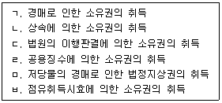
- ㄱ, ㄴ
- ㄷ, ㅂ
- ㄱ, ㄴ, ㄷ
- ㄱ, ㄴ, ㄹ, ㅁ
- ㄷ, ㄹ, ㅁ, ㅂ
(정답률: 알수없음)
11. 민법상 법인의 설립에 관한 설명으로 옳지 않은 것은? (다툼이 있으면 판례에 의함)
- 사단법인의 설립행위는 요식행위이다.
- 재단법인은 공익을 목적으로 해서만 설립할 수 있다.
- 재단법인의 설립을 허가할 것인지 여부는 주무관청의 재량에 속한다.
- 합동행위설에 따르면 사단법인을 설립하는 자 가운데 한 사람의 설립행위가 행위무능력을 이유로 취소되더라도 다른 설립자의 설립행위에는 영향을 미치지 않는다.
- 재단법인설립을 위해 부동산을 출연한 경우에 재단법인이 소유권등기를 갖추지 못하였다면 제3자에게 소유권의 취득을 주장하지 못한다.
(정답률: 알수없음)
12. 부동산등기의 유효요건에 관한 설명으로 옳지 않은 것은? (다툼이 있으면 판례에 의함)
- 소유권이전등기가 된 후에 등기부가 멸실되었더라도 물권변동의 효력이 상실되는 것은 아니다.
- 등기는 물권변동의 효력 발생요건일 뿐 존속요건이 아니므로, 등기가 불법 말소되었더라도 물권의 존속에는 영향이 없다.
- 매매계약이 무효ㆍ취소되어 등기명의를 회복하는 방법으로 말소등기 대신 새로운 이전등기를 청구할 수 있다.
- 무효등기의 유용은 그 등기를 유용하기로 하는 합의가 이루어지기 전에 등기상 이해관계가 있는 제3자가 생기지 않은 경우에 한하여 허용된다.
- 등기상 이해관계인이 없는 한 멸실된 건물의 보존등기를 멸실 후 신축한 건물의 보존등기로 유용하는 것도 허용된다.
(정답률: 알수없음)
13. 권리능력 없는 사단(법인 아닌 사단)에 관한 설명으로 옳은 것은? (다툼이 있으면 판례에 의함)
- 사단법인에 관한 민법의 규정 중 법인격을 전제로 하는 것을 제외하고는, 이를 권리능력 없는 사단에 유추적용할 수 있다.
- 권리능력 없는 사단의 재산소유형태는 합유이다.
- 종중은 공동선조와 성(姓)과 본(本)을 같이하는 성년 남자로만 구성된다.
- 권리능력 없는 사단은 소송상 당사자능력이 없다.
- 권리능력 없는 사단인 교회의 교인들의 일부가 집단적으로 탈퇴하거나 소속교단을 변경하면 교회가 분열된 것으로 본다.
(정답률: 알수없음)
14. 등기의 추정력에 관한 설명으로 옳지 않은 것은? (다툼이 있으면 판례에 의함)
- 소유권이전등기는 그 추정력을 다투는 측에서 무효사유를 주장ㆍ입증하지 않는 한, 등기원인 사실에 관한 입증이 부족하다는 이유로 그 등기가 무효라고 단정할 수 없다.
- 소유권이전청구권 보전을 위한 가등기가 경료되어 있으면 소유권이전등기를 청구할 어떤 법률관계가 있다고 추정된다.
- 전(前) 소유자가 사망한 이후에 그 명의의 신청에 의하여 이루어진 이전등기는 일단 원인무효의 등기라고 볼 것이어서, 특별한 사정이 없는 한 등기의 추정력이 인정되지 않는다.
- 소유권이전등기가 경료되어 있는 경우에 그 등기명의자는 제3자에 대해서 뿐만 아니라 그 전(前)소유자에 대해서도 적법한 등기원인에 의하여 소유권을 취득한 것으로 추정된다.
- 소유권이전등기가 원인 없이 말소된 경우에는 그 회복등기가 경료되기 전이라 하더라도 말소된 등기의 최종명의인은 적법한 권리자로 추정된다.
(정답률: 알수없음)
15. 甲 사단법인의 이사 乙은 丙으로부터 甲의 사업운영자금 명목으로 甲명의로 1억원을 차용한 후, 사적인 용도로 사용하였다. 다음 중 옳지 않은 것은? (다툼이 있으면 판례에 의함)
- 乙이 다른 이사들의 동의 없이 단독으로 금전을 차용하였다고 해서 그 행위가 무효인 것은 아니다.
- 丙이 乙의 배임적 의도를 알 수 없었던 경우에는 乙의 대표행위는 甲의 행위로서 유효하므로 甲은 丙에게 금전소비대차에 기한 의무를 부담한다.
- 丙이 乙의 배임적 의도를 알고 있었던 경우에는 丙은 甲에게 금전소비대차에 기한 채무이행을 청구하지 못한다.
- 법인의 불법행위가 성립하는 경우 乙은 甲과 연대하여 丙에게 배상책임을 진다.
- 乙의 행위는 직무에 관한 행위이므로 丙이 乙의 배임적 의도를 알고 있었던 경우에도 丙은 甲의 불법행위책임을 물을 수 있다.
(정답률: 알수없음)
16. 점유에 관한 설명으로 옳지 않은 것은? (다툼이 있으면 판례에 의함)
- 점유보조자는 점유방해자에 대하여 점유보호청구권을 행사할 수 없다.
- 공유자 1인이 공유토지 전부를 점유하는 경우, 특별한 사정이 없는 한 다른 공유자의 지분비율의 범위 내에서는 타주점유이다.
- 등기된 부동산에 관하여는 특별한 사정이 없는 한 점유자의 권리에 관한 적법추정이 미치지 않는다．
- 점유자는 소유의 의사로 선의ㆍ무과실로 점유한 것으로 추정한다.
- 점유권에 기인한 소와 본권에 기인한 소는 서로 영향을 미치지 않는다.
(정답률: 알수없음)
17. 주물ㆍ종물에 관한 설명으로 옳지 않은 것은? (다툼이 있으면 판례에 의함)
- 주물의 소유자나 이용자의 상용에 공여되고 있다면 주물 자체의 효용과 직접적 관련이 되지 않는 물건도 종물이다.
- 주물의 구성부분은 종물이 아니다.
- 종물은 주물의 처분에 따른다는 규정은 임의규정이다.
- 건물에 대한 저당권이 실행되어 매수인(경락인)이 건물의 소유권을 취득한 때에는 특별한 사정이 없는 한 그 건물의 소유를 목적으로 한 토지의 임차권도 매수인에게 이전된다.
- 주물의 상용에 이바지하는지 여부와 관련하여 주물과 종물 사이에 밀접한 장소적 관련성이 있어야 한다.
(정답률: 알수없음)
18. 점유자와 회복자의 관계에 있어서 옳은 내용만을 모두 고른 것은? (다툼이 있으면 판례에 의함)
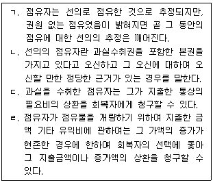
- ㄱ, ㄴ
- ㄴ, ㄷ
- ㄴ, ㄹ
- ㄱ, ㄹ
- ㄷ, ㄹ
(정답률: 알수없음)
19. 대리에 관한 설명으로 옳지 않은 것은?
- 대리행위의 하자는 대리인을 기준으로 판단하는 것이 원칙이다.
- 부동산등기의 신청에는 쌍방대리가 허용된다.
- 본인이 행위무능력자를 대리인으로 선임한 경우 본인은 대리인의 행위무능력을 이유로 대리행위를 취소할 수 없다.
- 대리인이 사망하면 복대리권은 소멸한다.
- 부동산매매계약 체결의 대리권을 가진 자는 특별한 사정이 없는 한 본인을 대리하여 계약을 해제할 수 있다.
(정답률: 알수없음)
20. 선의취득에 관한 설명으로 옳지 않은 것은? (다툼이 있으면 판례에 의함)
- 선의취득에 의한 물권취득의 효력은 법률의 규정에 의한 것이므로, 선의취득자가 임의로 선의취득의 효과를 거부하고 종전 소유자에게 목적물을 반환받아 갈 것을 요구할 수 없다.
- 타인의 동산을 보관하던 乙을 소유자라고 오신하여 그로부터 동산을 매수함과 동시에 그것을 乙에게 임대해 준 甲은 그 동산을 선의취득한다.
- 횡령된 동산도 선의취득의 대상이 될 수 있다.
- 채권자가 질권설정자에게 처분권이 있다고 믿고 과실 없이 질권을 설정받은 경우에는 질권을 선의취득한다.
- 채무자나 물상보증인의 소유가 아닌 동산을 경매절차에서 매각대금을 완납하고 인도받은 매수인(경락인)은 그 동산을 선의취득할 수 있다.
(정답률: 알수없음)
21. 착오에 관한 설명으로 옳지 않은 것은? (다툼이 있으면 판례에 의함)
- 착오를 이유로 의사표시가 취소된 경우 그 취소로 인하여 손해를 입은 자는 불법행위를 이유로 손해배상을 청구할 수 있다.
- 금융기관이 아닌 채권자와 체결한 보증계약에서 주채무자의 신용상태나 자력에 관한 보증인의 착오는 중요부분에 관한 것이 아니어서 보증인은 보증계약을 취소할 수 없다.
- 매수인이 목적물을 시가보다 고액으로 매수한 경우에 원칙적으로 매수인은 시가의 착오를 이유로 취소할 수 없다.
- 경계선을 침범하였다는 상대방의 강력한 주장에 의해 착오로 그간의 경계 침범에 대한 보상금 내지 위로금 명목으로 금원을 지급한 경우에는 법률행위의 중요부분의 착오로서 취소할 수 있다.
- 甲이 채무자란이 공란으로 된 근저당권설정계약서를 제시받고 그 채무자가 乙인 것으로 알고 근저당권설정자로 서명날인을 하였는데 그 후 채무자가 丙으로 되어 근저당권설정등기가 경료된 경우 법률행위의 중요부분에 대한 착오가 존재한다.
(정답률: 알수없음)
22. 집합건물의 소유 및 관리에 관한 설명으로 옳지 않은 것은? (다툼이 있으면 판례에 의함)
- 전유부분이 수인의 공유에 속하는 경우에 공유자는 관리단집회에서 각각 의결권을 행사할 수 있다.
- 재건축 비용의 분담에 관한 사항을 정하지 아니한 재건축 결의는 특별한 사정이 없는 한 무효이다.
- 대지(垈地) 위에 구분소유권의 목적인 건물이 속하는 1동의 건물이 있을 때에는 그 대지의 공유자는 그 건물의 사용에 필요한 범위 내의 대지에 대하여 분할을 청구하지 못한다.
- 각 공유자는 규약에 달리 정함이 없는 한 그 지분의 비율에 따라 공용부분의 관리비용 기타 의무를 부담한다.
- 집합건물구분소유권의 특별승계인이 구분소유권을 다시 제3자에게 이전한 경우에도 자신의 전(前)구분소유자의 공용부분에 대한 체납관리비를 지급할 책임이 있다.
(정답률: 알수없음)
23. 다음 중 상대방 있는 단독행위는?
- 증여
- 유언
- 재단법인의 설립행위
- 소유권의 포기
- 계약의 취소
(정답률: 알수없음)
24. 공유에 관한 설명으로 옳지 않은 것은? (다툼이 있으면 판례에 의함)
- 소수지분권자가 공유물의 전부 또는 일부를 배타적 독점적으로 사용하는 경우에 다른 공유자는 자신의 지분이 과반수에 미달되더라도 단독으로 공유물 전부의 인도를 청구할 수 있다.
- 과반수의 지분권을 가진 공유자가 공유물의 특정부분을 배타적으로 사용ㆍ수익할 것을 정하더라도 이는 공유물의 관리방법으로서 적법하다.
- 공유물의 처분ㆍ변경에는 공유자 전원의 동의가 있어야 한다.
- 제3자가 공유물을 무단으로 사용한 경우, 공유자 1인은 공유자 전원을 위하여 제3자에게 부당이득 전부의 반환을 청구할 수 있다.
- 공유자가 그의 지분을 포기하거나 상속인 없이 사망하면 그 지분은 다른 공유자에게 각 지분의 비율로 귀속한다.
(정답률: 알수없음)
25. 표현대리에 관한 설명으로 옳지 않은 것은? (다툼이 있으면 판례에 의함)
- 투자수익보장약정이 강행법규에 위반되어 무효인 경우 표현대리의 법리가 적용될 여지가 없다.
- 공법상 행위의 대리권은 표현대리의 기본대리권이 될 수 없다.
- 대리권소멸 후의 표현대리가 인정되는 경우에 그 표현대리의 권한을 넘는 대리행위가 있을 때에는 권한을 넘은 표현대리가 성립할 수 있다.
- 본인의 직함, 명칭, 상호 등의 사용 허락 또는 묵인도 대리권수여의 표시로 인정될 수 있다.
- 유권대리의 주장 속에 표현대리의 주장이 포함된 것으로 볼 수 없다.
(정답률: 알수없음)
26. 다음 (가), (나)에 관한 설명으로 옳지 않은 것은? (다툼이 있으면 판례에 의함)
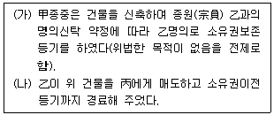
- (가)의 경우, 甲은 명의신탁약정을 해지하고 乙에게 건물에 대한 소유권이전등기를 청구할 수 있다.
- (가)의 경우, 건물의 소유권은 대외적으로 乙에게 귀속된다.
- (나)의 경우, 丙이 甲ㆍ乙 사이의 명의신탁에 관하여 악의라면 건물의 소유권을 취득하지 못한다.
- (나)의 경우, 甲은 丙에게 그 건물의 반환과 이전등기의 말소를 직접 청구할 수 없다.
- (나)의 경우, 丙이 乙의 배임행위에 적극 가담한 경우에는 乙과 丙의 계약은 반사회적 법률행위로서 무효이다.
(정답률: 알수없음)
27. 선량한 풍속 및 기타 사회질서에 반하여 무효인 경우가 아닌 것은? (다툼이 있으면 판례에 의함)
- 다수의 세입자입주권을 투기의 목적으로 매수하는 행위
- 이중양도의 경우 제2의 양수인이 양도인의 배임행위에 적극 가담한 경우
- 부첩관계의 종료를 해제조건으로 하는 증여계약
- 사찰이 그 존립에 필요불가결한 재산인 임야를 증여하는 행위
- 변호사 아닌 자가 민사소송의 당사자를 승소시켜주고 그 대가로 소송물의 일부인 임야지분을 양수받기로 약정한 경우
(정답률: 알수없음)
28. 부합에 관한 설명으로 옳지 않은 것은? (다툼이 있으면 판례에 의함)
- 부동산에 부합된 동산의 가격이 부동산의 가격을 초과하여도 부동산의 소유자는 원칙적으로 부합한 물건의 소유권을 취득한다.
- 부합한 동산의 주종을 구별할 수 없는 때에는 동산의 소유자는 현재 가액의 비율로 합성물을 공유한다.
- 건물의 임차인이 임차한 건물에 그 권원에 기하여 증축을 하였더라도 증축한 부분이 기존 건물의 구성부분이 된 때에는, 증축된 부분에 별개의 소유권이 성립할 수 없다.
- 권원에 기하여 증축된 부분이 구조상으로나 이용상으로 기존 건물과 구분되는 독립성이 있는 때에는, 구분소유권이 성립하여 증축된 부분은 독립한 소유권의 객체가 될 수 있다.
- 증축 당시에는 독립성이 없었지만 그 후 구조의 변경 등으로 독립한 권리의 객체성을 취득하면 증축된 부분은 독립한 소유권의 객체가 될 수 있다.
(정답률: 알수없음)
29. 다음 중 대리권 등에 관한 설명으로 옳지 않은 것은?
- 대리인의 행위가 자기계약 및 쌍방대리금지 조항에 위배된 경우 무권대리행위로 된다.
- 대리권이 존재하는 것은 분명하지만, 그 범위가 불분명한 경우, 대리인은 보존행위만을 할 수 있다.
- 원인이 되는 기초적 법률관계가 종료되기 전이라도 본인은 언제든지 수권행위를 철회할 수 있다.
- 대리인이 사기나 강박을 당하지 않는 한, 본인이 사기나 강박을 당했더라도 본인은 대리행위를 취소할 수 없다.
- 금치산자라도 임의대리인이 될 수 있다.
(정답률: 알수없음)
30. 지역권에 관한 설명으로 옳지 않은 것은?
- 지역권은 당사자 간의 계약에 의하여 성립할 수 있으나, 상린관계는 민법의 규정에 의하여 당연히 인정된다.
- 지역권은 요역지를 위한 종된 권리이므로 요역지와 분리하여 양도하지 못한다.
- 지역권은 계속되고 표현된 것에 한하여 시효취득의 대상이 될 수 있다.
- 지역권이 설정된 후에 요역지에 대하여 지상권을 취득한 자는 특약이 없는 한 그 지역권을 행사할 수 없다.
- 요역지와 승역지는 반드시 인접하고 있을 필요는 없다.
(정답률: 알수없음)
31. 다음 설명 중 옳지 않은 것은?
- 조건성취의 효과는 원칙적으로 소급하지 않는다.
- 기간의 말일이 토요일 또는 공휴일인 때에는 기간은 그 익일로 만료한다.
- 시기부 법률행위는 기한이 도래한 때부터 효력이 생기고 종기부 법률행위는 기한이 도래한 때부터 그 효력을 잃는다.
- 기한의 이익은 특별한 사정이 없는 한, 채무자의 이익을 위한 것으로 추정한다.
- 기간의 계산에 있어 연령의 계산에는 출생일을 산입하지 않는다.
(정답률: 알수없음)
32. 甲과 乙은 乙소유의 건물에 대하여 전세금 1억원에 전세권을 설정하기로 하고 등기도 경료하였다. 다음 중 옳지 않은 것은? (다툼이 있는 경우 판례에 의함)
- 甲은 전세권 존속 중이라도 장래에 그 전세권이 소멸하는 경우에 전세금반환채권이 발생하는 것을 조건으로 그 장래의 조건부 채권을 유효하게 양도할 수는 있다.
- 전세권이 소멸한 경우, 乙의 전세금반환의무와 甲의 목적물 인도 및 전세권말소등기에 필요한 서류의 교부의무는 동시이행의 관계에 있다.
- 甲이 乙에 대한 기존의 채권 1억원으로 전세금지급에 갈음한 경우에는 전세권은 성립되지 아니한다.
- 만일 甲과 乙이 전세금반환채권을 담보할 목적으로 甲ㆍ乙ㆍ丙 3자간의 합의에 의해 丙명의로 전세권설정등기를 경료하였더라도 이 역시 유효하다.
- 전세권이 성립한 후 목적물의 소유권이 乙에서 丁으로 이전된 경우 乙은 원칙적으로 전세권설정자의 지위를 상실하여 전세금반환의무를 면한다.
(정답률: 알수없음)
33. 법률행위의 무효와 취소에 관한 설명으로 옳지 않은 것은? (다툼이 있으면 판례에 의함)
- 법률행위의 무효는 법률행위의 성립을 전제로 한다.
- 무효인 가등기를 유효한 것으로 전용하기로 약정하였다면 가등기는 소급하여 유효한 등기로 된다.
- 당사자가 입양의사로 친생자 출생신고를 한 경우 입양의 실질적 요건이 모두 구비되었다면 입양의 효력이 발생한다.
- 강박상태에서 벗어나지 않은 상태에서 한 추인은 그 효력이 발생하지 않는다.
- 신용카드 이용계약 취소시 미성년자가 반환할 금전상 이익은 특별한 사정이 없는 한 현존하는 것으로 추정된다.
(정답률: 알수없음)
34. 유치권에 관한 설명으로 옳지 않은 것은? (다툼이 있으면 판례에 의함)
- 유치권자가 유치권을 행사하는 동안에는 피담보채권의 소멸시효가 진행하지 않는다.
- 수급인의 재료와 노력으로 신축된 건물에 대해서 특별한 사정이 없는 한 수급인은 유치권을 행사할 수 없다.
- 점유가 불법행위로 인한 경우에는 유치권이 성립하지 않는다.
- 채권의 변제기가 도래하지 않는 동안에는 유치권이 성립하지 않는다.
- 유치물이 경매된 경우 유치권자는 매수인(경락인)에게도 유치권을 주장할 수 있으나, 매수인에게 피담보채권의 변제를 청구할 수는 없다.
(정답률: 알수없음)
35. 소멸시효와 제척기간의 비교에 관한 설명으로 옳지 않은 것은?
- 소멸시효의 경우 중단사유가 있으면 시효의 진행이 중단되나 제척기간에는 중단제도가 인정되지 아니한다.
- 행위무능력을 이유로 한 취소권의 존속기간은 소멸시효기간이 아니라 제척기간이다.
- 소멸시효의 완성 후에는 시효이익을 포기할 수 없으나, 제척기간은 기간의 만료로 권리가 당연히 소멸하므로 성질상 포기제도가 없다.
- 판례에 따르면 소멸시효의 경우에는 변론주의 원칙상 소멸시효를 주장하여야 참작하나 제척기간의 경우에는 법원이 직권으로 참작하여야 한다.
- 소멸시효가 완성되면 권리소멸의 효과가 소급하는데 반하여 제척기간의 경우에는 소급하지 않는다.
(정답률: 알수없음)
36. 저당권의 효력이 미치는 범위에 관한 설명으로 옳지 않은 것은?
- 저당권 설정 후 건물을 증축하여 증축 부분이 기존 저당 목적 건물에 부합한 경우 그 부합된 부분에도 저당권의 효력이 미친다.
- 타인이 저당목적물의 상용에 제공한 물건에 대해서는 저당권의 효력이 미치지 않는다.
- 건물에 대한 저당권의 효력은 그 건물의 소유를 목적으로 하는 지상권에도 미친다.
- 저당목적물이 매매된 경우 그 매매대금에 대하여도 저당권자가 물상대위할 수 있다.
- 저당권자가 물상대위권을 행사하기 위한 요건으로서의 지급 또는 인도 전 압류는 반드시 저당권자가 할 필요는 없다.
(정답률: 알수없음)
37. 소멸시효의 기산점에 관한 설명 중 옳은 것(○)과 틀린 것(×)을 바르게 표시한 것은? (다툼이 있으면 판례에 의함)
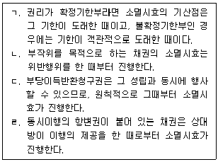
- ㄱ(○), ㄴ(○), ㄷ(○), ㄹ(×)
- ㄱ(○), ㄴ(○), ㄷ(×), ㄹ(○)
- ㄱ(×), ㄴ(○), ㄷ(×), ㄹ(×)
- ㄱ(○), ㄴ(×), ㄷ(○), ㄹ(○)
- ㄱ(×), ㄴ(×), ㄷ(○), ㄹ(○)
(정답률: 알수없음)
38. 甲이 채무자 乙소유의 A부동산에 채권최고액 2천만원의 근저당권을 취득하였다. 다음 중 옳지 않은 것은? (다툼이 있으면 판례에 의함)
- 甲이 경매를 신청하는 경우 경매신청시에 근저당권이 확정되므로 그 이후에 발생하는 甲의 원금채권은 근저당으로 담보되지 않는다.
- 甲이 경매를 신청하여 경매개시결정이 있은 후에 경매신청이 취하되었다면 채무확정의 효과는 번복된다.
- 근저당권의 실행비용은 甲의 채권최고액 2천만원에 포함되지 아니한다.
- 甲의 채권이 확정되기 전이라도 피담보채권과 함께 근저당권을 양도할 수 있다.
- 만일 丙이 A부동산에 대하여 후순위 저당권을 취득한 경우, 丙이 경매를 신청하는 경우에는 매각대금 완납시에 甲의 근저당권이 확정된다.
(정답률: 알수없음)
39. 17세 甲은 자신 소유의 부동산을 법정대리인의 동의 없이 乙에게 매도ㆍ등기하고, 乙은 다시 丙에게 매도ㆍ등기하였다. 다음 중 옳지 않은 것은?
- 甲이 乙과의 매매계약을 취소한 경우에 丙은 선의ㆍ무과실이더라도 소유권을 취득할 수 없다.
- 甲은 乙과의 매매계약을 취소하고 이를 이유로 丙명의의 소유권이전등기의 말소를 청구할 수 있다.
- 甲이 매매계약을 취소하려면 丙이 아니라 乙에게 취소의 의사표시를 해야 한다.
- 甲이 乙과의 매매계약을 취소하여 甲이 부동산의 소유권을 회복한 경우에는 丙은 乙에게 매도인의 담보책임을 물을 수 있다.
- 만약 乙도 미성년자이며 법정대리인의 동의없이 甲 및 丙과의 매매계약을 체결한 경우, 甲의 법정대리인이 甲ㆍ乙간의 계약을 추인한 때에는 乙은 甲과의 계약을 취소할 수 없다.
(정답률: 알수없음)
40. 양도담보에 관한 설명으로 옳은 것은? (다툼이 있으면 판례에 의함)
- 양도담보권자는 사용ㆍ수익할 수 있는 정당한 권한이 있는 양도담보설정자에 대하여 자신이 사용ㆍ수익을 하지 못한 것을 이유로 임료 상당의 손해배상이나 부당이득반환의 청구를 할 수 있다.
- 피담보채권이 시효로 소멸하더라도 양도담보권은 소멸하지 않는다.
- 가등기담보 등에 관한 법률에 의하면 채무의 변제기가 지난 때부터 10년이 지난 이후에는 채무자는 채권담보의 목적으로 마친 소유권이전등기의 말소를 청구할 수 없다.
- 양도담보권은 특약이 없는 한 종물ㆍ과실에도 당연히 그 효력이 미친다.
- 채권의 담보목적으로 양도된 재산에 관한 담보권의 실행은 다른 약정이 없는 한 처분정산만이 허용된다.
(정답률: 알수없음)
2과목: 경제학원론
41. 완전경쟁시장에서 개별기업의 단기총비용함수는 TC = 4Q2+160 이고, 생산재화의 가격이 32이다. 개별기업의 단기이윤을 극대화하는 생산량은? (단, TC는 단기총비용이고, Q는 생산량이다.)
- 0
- 2
- 4
- 6
- 8
(정답률: 알수없음)
42. 다음 ( )안에 알맞은 것은?
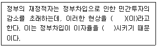
- 분산투자, 상승
- 금융중개, 하락
- 승수효과, 하락
- 위험분산, 하락
- 구축효과, 상승
(정답률: 알수없음)
43. 한국과 미국 간에 이자율평가설(interest rate parity theory)이 성립한다. 현재 한국의 명목이자율이 2%, 미국의 명목이자율이 1%, 예상환율이 1달러당 1212원일 때, 현재환율은?
- 1164
- 1188
- 1200
- 1212
- 1236
(정답률: 알수없음)
44. A는 매년 여름 방학 중 아르바이트를 하는데 이번 여름의 시간당 임금은 작년보다 50% 높다. 이에 따라 A는 아르바이트 시간을 줄이고 여가를 더 즐기기로 했다. 다음 설명 중 옳은 것은?
- 여가에 대한 소득효과가 대체효과보다 크다.
- 여가에 대한 대체효과가 소득효과보다 크다.
- 여가에 대한 소득효과가 대체효과를 정확히 상쇄한다.
- A의 노동공급곡선은 수직선이다.
- A의 노동공급곡선은 우상향한다.
(정답률: 알수없음)
45. 노동수요함수와 노동공급함수가 다음과 같다. 
정부가 최저임금수준을 균형임금수준보다 20% 인상시킬 때 발생하는 실업량은? (단, ND는 노동수요, NS는 노동공급, w는 임금이다.)
- 0
- 1
- 2
- 3
- 4
(정답률: 알수없음)
46. 총수요 부족으로 인한 경기침체로 실제성장률과 잠재성장률 간의 격차가 발생하였다. 이를 해소하기 위한 재정정책 수단은?
- 세금 인상
- 정부지출 확대
- 한계소비성향 증가
- 이자율 인하
- 정부투자 축소
(정답률: 알수없음)
47. A지역 아파트의 공급곡선은 완전비탄력적이고 수요곡선은 우하향한다. 정부가 아파트의 매도자에게 양도 차익의 50%를 양도소득세로 부과하였다. 다른 조건이 일정할 때, 조세귀착에 관한 설명으로 옳은 것은?
- 매입자와 매도자가 각각 1/2씩 부담한다.
- 매입자가 전액 부담한다.
- 매도자가 전액 부담한다.
- 매입자와 매도자 모두 조세부담이 없다.
- 매도자가 1/2을 부담하고 매입자는 부담이 없다.
(정답률: 알수없음)
48. 자동차 등록세는 자동차 구입가격의 7%이다. 정부는 신차를 구입하는 사람들에게 등록세를 70% 감면해주는 정책을 발표했다. 세금 감면을 실시한 후 예상되는 자동차 수요곡선은? (단, 그림에서 굵은 실선은 정책 시행 이전의 수요곡선이고, 점선들은 정책 시행 이후의 가상 수요곡선들이다.)
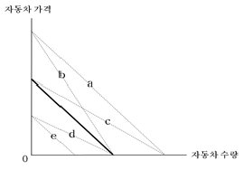
- a
- b
- c
- d
- e
(정답률: 알수없음)
49. 기업의 생산비용에 관련된 설명으로 옳은 것은?
- 고정비용은 생산비용에 포함되지 않는다.
- 한계비용은 생산요소 투입을 한 단위 증가시키기 위해 추가로 지출되어야 하는 비용을 말한다.
- 평균비용은 자본투입 단위당 생산비용을 말한다.
- 완전경쟁기업은 단기에 가격이 평균가변비용보다 낮다면 조업을 중단한다.
- 단기총비용곡선과 장기총비용곡선은 모두 자본비용을 포함하므로 서로 일치한다.
(정답률: 알수없음)
50. 빵과 책만 소비하는 어느 경제에서 가격과 소비량은 다음 표와 같다. 20⑤년도를 기준년도로 할 때 2009년의 실질GDP와 GDP디플레이터의 값은?
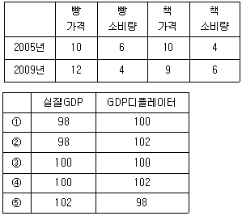
- ①
- ②
- ③
- ④
- ⑤
(정답률: 알수없음)
51. 인플레이션율과 실업률에 관한 설명으로 옳은 것은?
- 필립스곡선은 인플레이션율과 실업률 간의 양(+)의 관계를 보여준다.
- 합리적 기대이론에 따르면 인플레이션율과 실업률은 장기적으로는 양(+)의 관계에 있지만 단기적으로는 음(-)의 관계에 있다.
- 인플레이션율과 실업률이 동시에 상승하는 현상은 필립스곡선의 이동으로도 설명될 수 있다.
- 스태그플레이션은 인플레이션율이 상승하면서 실업률이 감소되는 현상이다.
- 총공급 충격은 스태그플레이션을 초래할 수 없다.
(정답률: 알수없음)
52. A국가는 상대적으로 노동력이 풍부하고 B국가는 상대적으로 자본이 풍부하다. 헥셔-올린 정리에 입각할 때 경제적 교류가 전혀 없던 두 국가 간에 자유무역이 이루어진다면, 무역 이전과 비교하여 A국가의 임금과 이자율의 변화는?
- 임금은 상승하고 이자율은 하락할 것이다.
- 임금은 하락하고 이자율은 상승할 것이다.
- 임금과 이자율 모두 하락할 것이다.
- 임금과 이자율 모두 상승할 것이다.
- 임금과 이자율 모두 불변일 것이다.
(정답률: 알수없음)
53. 토마토케첩과 핫도그는 정상재이며, 서로 보완재이다. 핫도그 원료인 밀가루 가격 인상에 따른 핫도그 가격 상승의 효과로 옳은 것은?
- 토마토케첩의 균형가격 상승
- 핫도그의 균형공급량 증가
- 토마토케첩의 균형공급량 증가
- 핫도그의 균형수요량 증가
- 토마토케첩의 수요 감소
(정답률: 알수없음)
54. 소비자 A는 사과와 귤만을 소비한다. 주어진 예산을 다 쓸 경우 사과 10개와 귤 20개를 살 수도 있고, 사과 14개와 귤 16개를 살 수도 있다. 만약 주어진 예산을 모두 사과만을 사는데 쓴다면 살 수 있는 사과의 갯수는? (단, 사과와 귤의 가격은 일정하다.)
- 20개
- 24개
- 30개
- 36개
- 40개
(정답률: 알수없음)
55. 두 개의 분리된 시장에서 동일한 상품을 판매하는 독점기업이 있다. 두 시장의 수요곡선은 각각 P1 = 100 – 0.5Q1과 P2 = 80 – Q2 이다. 각 시장에 대해 가격차별이 가능하고, 소비자 간 전매는 불가능하다. 이윤을 극대화하는 독점기업이 더 높은 가격을 설정하는 시장과 두 시장 간의 가격 차는? (단, 공급자의 한계비용은 0이다. P1과 P2는 각각 시장1과 시장2의 상품가격이며, Q1과 Q2는 각각 시장1과 시장2의 수요량이다.)
- 시장 1, 가격 차 5
- 시장 1, 가격 차 10
- 시장 2, 가격 차 5
- 시장 2, 가격 차 10
- 가격차별을 하지 않는다.
(정답률: 알수없음)
56. 절대적 구매력평가설에 관한 설명으로 옳지 않은 것은?
- 장기적 환율결정이론이다.
- 구매력평가설이 성립하면 실질환율은 1이다.
- 명목환율은 두 나라 화폐 사이의 구매력 차이를 반영한다.
- 일물일가의 법칙에 근거하여 도출된다.
- 구매력평가설이 성립하면 순수출은 순자본유출과 크기가 같다.
(정답률: 알수없음)
57. 총수요곡선이 우하향하는 이유가 아닌 것은?
- 물가수준이 하락하면 화폐의 실질가치가 상승하여 소비가 증가한다.
- 물가수준이 하락하면 화폐보유를 줄이기 때문에 이자율이 낮아지고 투자가 증가한다.
- 물가수준이 상승하면 이자율이 상승하여 할부로 구매하는 내구재 소비가 감소한다.
- 물가수준이 상승하면 가격경쟁력이 낮아져 순수출이 감소한다.
- 물가수준이 상승하면 화폐수요가 증가하여 재화와 서비스에 대한 지출이 증가한다.
(정답률: 알수없음)
58. 다음 중 나머지 경우와 다른 방향으로 대미 달러 환율에 영향을 미치는 것은?
- 국내 기업에 의한 해외직접투자가 증가한다.
- 정부가 외환시장에 개입하여 달러화를 매도한다.
- 경상수지 흑자폭 증가세가 지속된다.
- 외국인 관광객들의 국내 지출이 큰 폭으로 증가한다.
- 외국인 투자자들이 국내 주식을 매수하는 추세가 지속된다.
(정답률: 알수없음)
59. 통화량 증가율은 연 10%, 실질GDP 증가율은 연 -2%, 인플레이션율은 연 2%이다. 화폐수량설이 성립할 때, 연간 화폐유통속도 증가율은?
- -12%
- -10%
- 0%
- 10%
- 12%
(정답률: 알수없음)
60. 중앙은행이 이미 발행된 국채를 매입할 때, 일반적으로 기대되는 이자율과 총수요의 변화는?
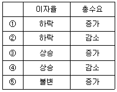
- ①
- ②
- ③
- ④
- ⑤
(정답률: 알수없음)
61. 소비자 A는 두 재화 X와 Y만을 소비하고 있다. 그의 무차별곡선은
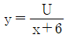
로 표현된다. 다음 설명 중 옳은 것은? (단, U는 효용수준, x는 X재의 소비량, y는 Y재의 소비량이다.)- X재 1단위와 Y재 1단위를 소비하면 A의 효용수준은 5이다.
- X재 2단위와 Y재 2단위를 소비하면 A의 효용수준은 10이다.
- X재 15단위와 Y재 10단위를 소비하는 것보다 X재 10단위와 Y재 15단위를 소비하는 것을 선호한다.
- X재 8단위와 Y재 9단위를 소비하는 것보다 X재 9단위와 Y재 8단위를 소비하는 것을 선호한다.
- X재 8단위와 Y재 9단위를 소비하는 것과 X재 9단위와 Y재 8단위를 소비하는 것은 무차별하다.
(정답률: 알수없음)
62. 다음 ( )안에 알맞은 것은?
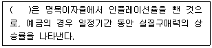
- 실질이자율
- 실질환율
- 물가상승률
- 경제성장률
- 실업률
(정답률: 알수없음)
63. 케인즈의 이자율이론에 관한 설명으로 옳지 않은 것은?
- 소득수준이 상승하면 화폐수요가 증가한다.
- 화폐수요가 증가하면 이자율이 상승한다.
- 통화당국이 화폐공급을 증대시키면 이자율이 하락한다.
- 통화량이 증가하면 총수요가 감소한다.
- 이자율은 화폐의 수요와 공급이 일치하도록 변동한다.
(정답률: 알수없음)
64. 조세가 없는 경우 어떤 상품의 수요함수와 공급함수가 다음과 같다.
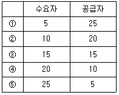
- ①
- ②
- ③
- ④
- ⑤
(정답률: 알수없음)
65. 완전경쟁시장에서 컴퓨터 한 대당 가격은 100만원이며, 컴퓨터를 생산하는 A기업의 각 생산량에 해당하는 총생산비용이 다음 표와 같다. A기업의 이윤극대화 생산량은?
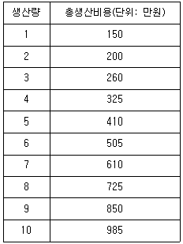
- 4
- 5
- 6
- 7
- 8
(정답률: 알수없음)
66. 통화승수에 관한 설명으로 옳지 않은 것은?
- 법정지급준비율을 인상하면 통화승수는 증가한다.
- 중앙은행이 이자율을 인상하면 통화승수는 증가한다.
- 현금통화비율이 감소하면 통화승수는 증가한다.
- 신용카드사용이 확대되면 통화승수가 변화될 수 있다.
- 초과지급준비율이 상승되면 통화승수는 감소한다.
(정답률: 알수없음)
67. 통화량 증대의 효과가 아닌 것은?
- 화폐의 가치는 일반적으로 하락한다.
- 장기적으로 물가는 상승한다.
- 고전학파의 이분법에 따르면 명목소득은 증가한다.
- 화폐의 중립성이 성립하면 실질이자율이 하락한다.
- 고전학파 이론에 따르면 장기적으로 실질소득은 변화가 없다.
(정답률: 알수없음)
68. 은행의 지급준비율이 20%일 때, 신규예금 1억원으로 신용창출과정을 통하여 만들어 질 수 있는 최대예금통화의 양은? (단, 신규예금을 포함한다.)
- 1억원
- 2억원
- 5억원
- 10억원
- 20억원
(정답률: 알수없음)
69. 생산함수 Q = 3K + 2L 이 나타내는 생산기술의 특성으로 옳은 것은? (단, Q는 생산량, K는 자본의 투입량, L은 노동의 투입량이다.)
- 요소 간 완전대체
- 자본의 한계생산 체증
- 노동의 한계생산 체증
- 한계기술대체율 체감
- 규모에 대한 수익체증
(정답률: 알수없음)
70. 다음 그림에 관한 설명으로 옳지 않은 것은? (단, I1과 I2는 일반적인 특성을 갖는 무차별곡선이고, 우하향하는 선분은 예산선을 나타낸다.)
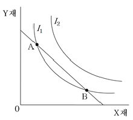
- Y재로 표시한 X재의 한계대체율이 B점보다 A점에서 크다.
- 무차별곡선 I1에서의 상품묶음이 I2에서의 어떤 상품묶음보다도 효용이 작다.
- 소비자가 A점에서 얻는 총효용의 크기가 B점에서 얻는 총효용의 크기와 같다.
- A점에서 X재의 1원당 한계효용은 Y재의 1원당 한계효용보다 작다.
- B점에서 소비하는 경우, 효용을 극대화하기 위해서는 X재의 소비를 감소시키고 Y재의 소비를 증가시켜야 한다.
(정답률: 알수없음)
71. 우리나라 국제수지에 관한 설명으로 옳은 것은?
- 유학생에 대한 해외 송금액 증가는 자본수지 적자 요인이다.
- 상품수지와 서비스수지는 동시에 적자를 기록할 수 없다.
- 외국인의 우리나라 채권보유 증가는 자본수지 적자 요인이다.
- 국내 기업의 해외 건설수주액 증가는 경상수지 적자 요인이다.
- 외국인에 대한 주식배당금의 해외 송금은 경상수지 적자 요인이다.
(정답률: 알수없음)
72. 경제성장에 관한 설명으로 옳은 것은?
- 자본의 한계생산성이 체감하므로 자본축적은 경제성장의 원동력이 아니다.
- 교육의 질을 높이는 정책은 인적자본의 축적을 초래하여 경제성장에 기여한다.
- 솔로우 경제성장모형에서 인구증가율이 높아지면 총국민소득은 감소한다.
- 솔로우 경제성장모형에서 기술진보는 경제성장에 영향을 주지 않는다.
- 솔로우 경제성장모형에서 저축률은 내생적으로 결정된다.
(정답률: 알수없음)
73. 다음 중 통화량의 감소를 가져오는 것은?
- 중앙은행이 재할인율을 인하하였다.
- 국내은행의 초과지급준비율이 상승하였다.
- 중앙은행이 법정지급준비율을 인하하였다.
- 국내은행이 국제금융시장에서 외화자금을 차입하였다.
- 중앙은행이 공개시장조작을 통해 국공채를 매입하였다.
(정답률: 알수없음)
74. A는 사과주스 한 잔과 당근주스 한 잔을 서로 바꾸어 마셔도 동일한 만족을 얻는 반면, B는 사과주스와 당근주스는 반드시 1:1로 섞어 마셔야 만족한다. 다음 설명 중 옳은 것은?
- A에게 당근주스와 사과주스는 완전보완재이다.
- A에게 당근주스와 사과주스의 한계대체율은 1이다.
- A의 무차별곡선은 수평선이다.
- B의 무차별곡선은 수평선이다.
- B에게 당근주스와 사과주스의 한계대체율은 -1이다.
(정답률: 알수없음)
75. 총수요-총공급 거시경제모형에서 총공급곡선을 이동시키는 요인이 아닌 것은?
- 노동인구의 변화
- 자본량의 증가
- 천연자원의 개발
- 기술진보
- 통화공급 증대
(정답률: 알수없음)
76. 인플레이션과 관련된 설명으로 옳지 않은 것은?
- 폐쇄경제에서 완전고용상태일 때 총수요가 총공급을 초과하면 인플레이션이 발생한다.
- 인플레이션이 예상될 때 개인들이 재화를 미리 사두려고 하면 인플레이션은 더욱 심화된다.
- 수입원자재 가격의 상승은 비용인상 인플레이션을 유발할 수 있다.
- 인플레이션으로 사회구성원 사이에 소득이나 부(富)가 재분배되기도 한다.
- 중앙은행은 인플레이션을 진정시키기 위해 국공채를 매입한다.
(정답률: 알수없음)
77. 순수공공재에 관한 설명으로 옳은 것은?
- 경합성을 갖는다.
- 배제불가능성을 갖는다.
- 무임승차자의 문제가 없다.
- 정부가 생산하는 모든 재화와 서비스는 순수공공재이다.
- 배제불가능성과 경합성을 동시에 갖는 깨끗한 공기는 대표적인 순수공공재이다.
(정답률: 알수없음)
78. 인터넷TV 사업권을 보유하고 있는 두 기업 A와 B가 다음과 같은 보수행렬(payoff matrix)을 갖고 있다. 이 때 내쉬균형 보수조합은? (단, 괄호안의 숫자 중 앞은 A기업의 보수, 뒤는 B기업의 보수를 나타낸다.)
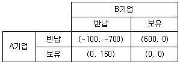
- (600, 0), (0, 150)
- (-100, -700), (0, 0)
- (600, 0)
- (0, 0)
- (-100, -700)
(정답률: 알수없음)
79. 소비자 A는 1기와 2기에 걸쳐 소비를 한다. c1을 1기의 소비, c2를 2기의 소비라고 할 때, 소비자 A의 효용함수는 U(c1, c2) = min{c1, c2} 이다. 1기의 소득은 210만원이고, 2기의 소득은 0원이며, 각 기의 소비재 가격은 1원으로 동일하다. A는 1기에 10%의 이자율로 저축을 하거나 대출을 받을 수 있다. 소비자 A의 행동 중 합리적인 것은?
- 100만원을 저축한다.
- 110만원을 저축한다.
- 100만원을 대출받는다.
- 110만원을 대출받는다.
- 저축하지도 대출받지도 않는다.
(정답률: 알수없음)
80. 국민의 50%는 소득 100을 균등하게 가지고 있고, 나머지 50%는 소득이 없다면, 지니계수는?
- 0
- 0.25
- 0.33
- 0.5
- 1
(정답률: 알수없음)
헌법상 대통령의 긴급재정경제명령은 법원이 될 수 없는 이유는 헌법 제118조에서 "법원은 전통적으로 법률에 의하여 설치되며, 법률에 특별한 규정이 없는 한 법원은 법률에 의하여 권한과 조직을 가진다"고 규정하고 있기 때문입니다. 따라서 대통령의 명령은 법원의 권한에 해당하지 않습니다.